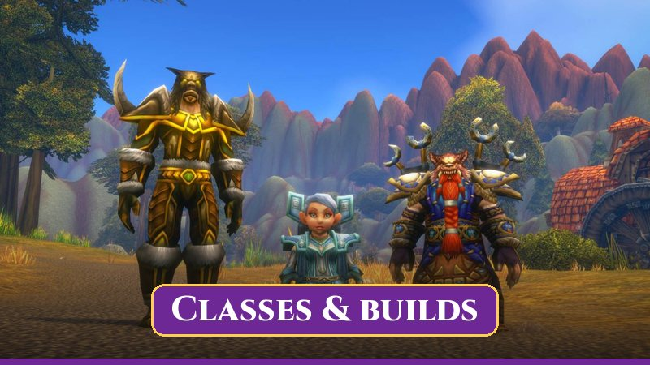
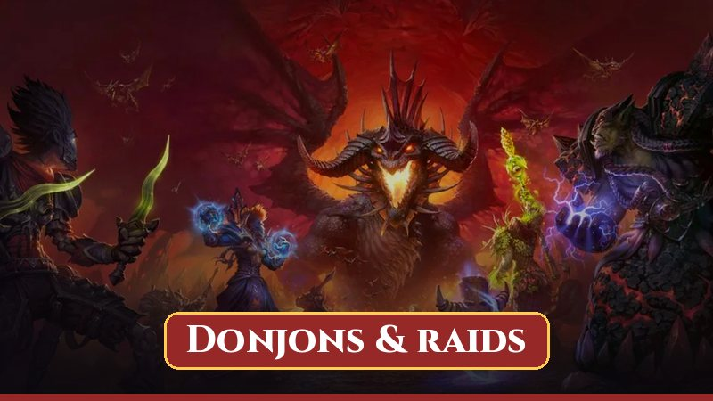
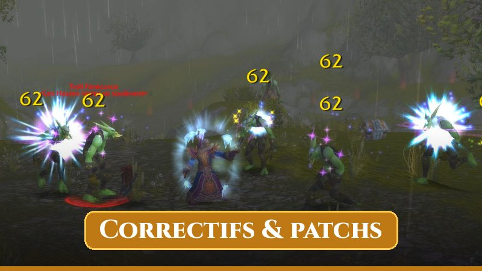
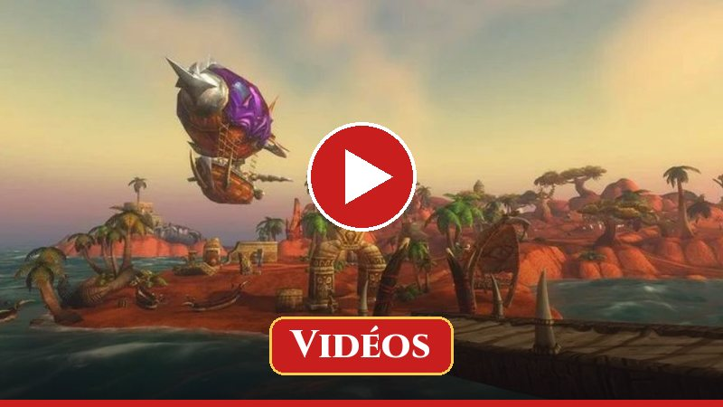
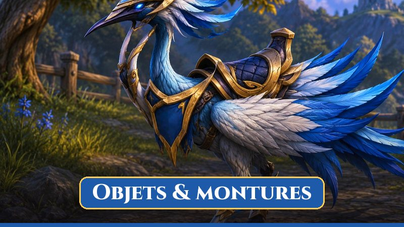

Toutes les news

Qui joue quoi ? Les classes et races les plus jouées de WoW Forever
Le chasseur en tête des classes, le mort-vivant en tête des races, le paladin mort-vivant comme duo préféré, et une Horde à peine devant l'Alliance.

Secrets de donjon : le boss caché de Dalaran et la hache qui mine sans métier
Comment invoquer Lyn the Ignored dans la Cité de Dalaran, et la hache Rockslicer des Mortemines qui permet de miner sans le métier.

Patch 1.60.1.71091 : monte épique réparée, Serment de lumière et nouvelle BD
Les montures de classe du paladin et du démoniste donnent enfin la monte épique, Serment de lumière dure 1 heure, et une BD animée sur les Éolides.

Vidéo : Maraudon en entier
Neuvième vidéo sur la chaîne Mygale TV : les 8 boss de Maraudon, de Noxxion à la princesse Theradras, avec un chapitre par boss.
Vidéos : le Bastion Krol'dok et Zul'Farrak en entier
Deux nouvelles vidéos sur Mygale TV, avec un chapitre par boss. Et un nouveau guide pour le Bastion Krol'dok.
Vidéo : la Prison en entier
Sixième vidéo sur la chaîne Mygale TV : la Prison de Hurlevent, avec ses 4 boss jusqu'à Dextren Ward et un chapitre par boss.

Secrets de Forever : le titre d'amiral, une dague de camouflage et des armes cachées
Le titre Amiral de la Voile sanglante, une dague du Temple englouti qui donne le Camouflage, une arme secrète pour les mages et un ours tank pour les chasseurs.
Coffres, monture épique et Fracasser armure : les bugs que Blizzard surveille
Coffres verrouillés fermés pour l'instant, monte épique bloquée pour paladins et démonistes, or d'Uldaman réduit, et la monte des Éolides sans réduction ?